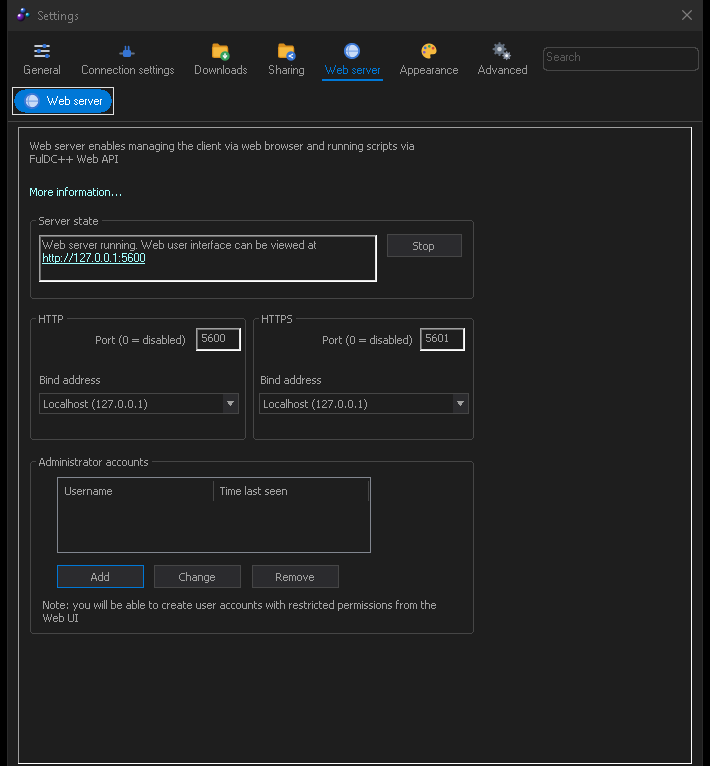

Remote & web UI
Driving FulDC++ from a browser, a phone, or another computer.
FulDC++ has a built-in web server. Turn it on and you get a full web interface to the same running client — queue, search, transfers, share, hubs and chat — from any browser on your network. It is the same client either way: the web UI is a second front-end, not a second copy.
Turning it on
- Open Settings → Web server.
- Set the HTTP port, and if you want encryption, the HTTPS port. Each can be bound to a specific address; leaving the bind address empty listens on everything.
- Add at least one administrator account with a password. Accounts with restricted permissions are added later from the web UI itself.
- Press Start. The page shows the live server state.
- Browse to
http://<your-computer>:<port>/and log in.

Accounts and permissions
The desktop settings page manages administrator accounts. Once the server is up, the web UI can create further accounts with restricted permissions — a limited account for a phone that may only search and queue, for example. An account saved with no permissions has none; it is not silently promoted to administrator.
What the web UI can do
Most of what the desktop client does, in a layout designed for a browser and usable on a phone:
- Home dashboard, and the sidebar for everything else
- Queue, Transfers, Finished downloads and uploads, Upload queue
- Search, Search spy, ADL search, Auto search
- Share, Favorite hubs, Favorite users and hub groups, Hublists
- Hub chat and private messages, including rich text messages
- RSS, Notepad, Highlights, Triggers, Chat filter, User commands
- Protocol debug, Settings and the client updater
It installs as a progressive web app, so you can add it to a phone home screen and have it behave like an application.
Extensions
The web server is also what runs extensions — Node.js add-ons that talk to the client over its API. Release checkers, share tools, chat bots and utilities all work this way, and they keep running whether or not a browser is open.
Manage them from View → Extensions in the desktop client:
Catalogue
Browse the extensions FulDC++ publishes and install with one click.
Install from a URL or a file
Point it at an address, or drag a .tgz package onto the window.
FulDC++ only — installing from a local file is not something the
upstream client can do.
Settings
Each extension declares its own options and FulDC++ renders them, so there is no separate configuration file to hunt down.
Enable, disable, auto-update
Per extension, without uninstalling anything.
If it will not connect
- Check the server actually started — the settings page shows its state, and a failed port bind is reported in View → System log.
- Another program may already hold the port. Pick a different one.
- Windows Firewall will ask the first time; if you missed the prompt, allow FulDC++ manually.
- From another machine, use the computer's LAN address, not
localhost.